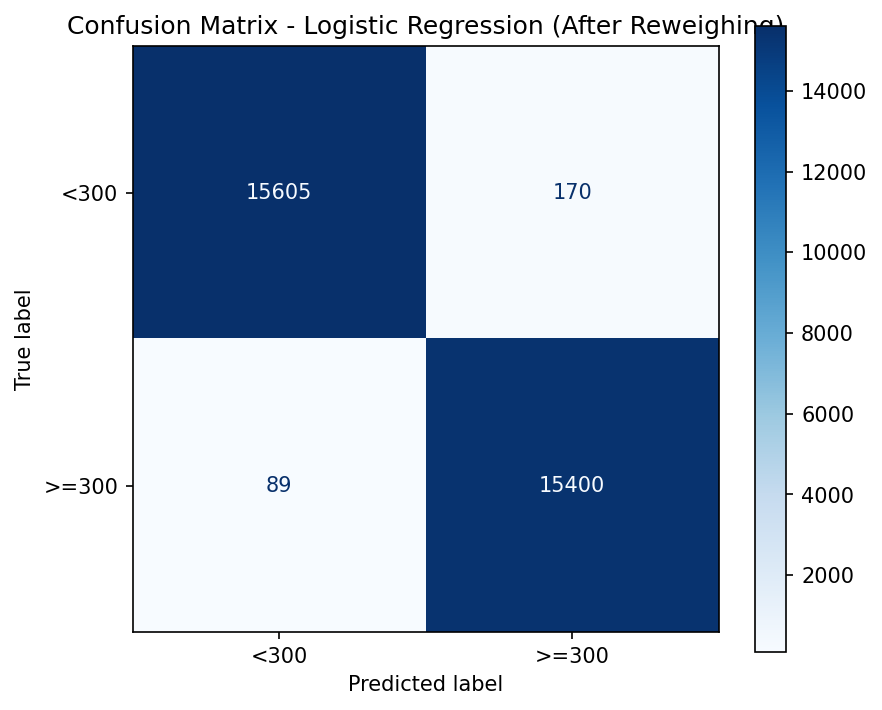
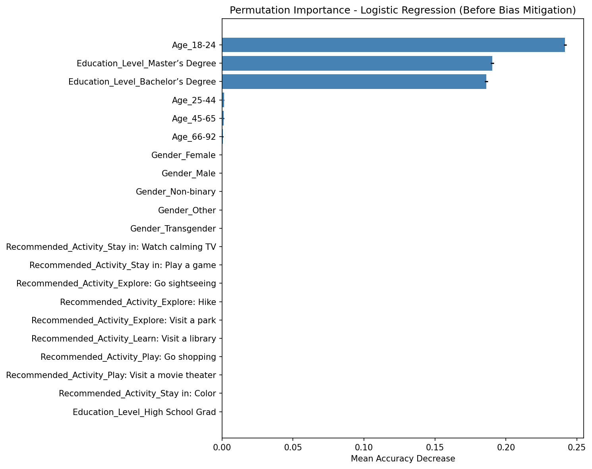
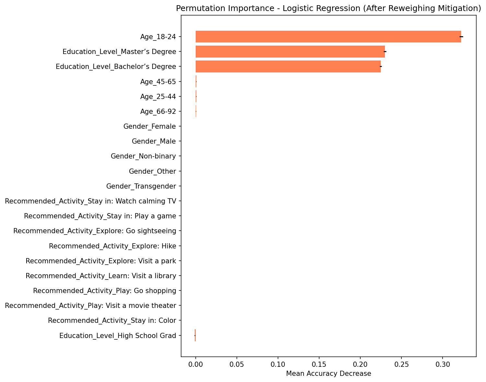
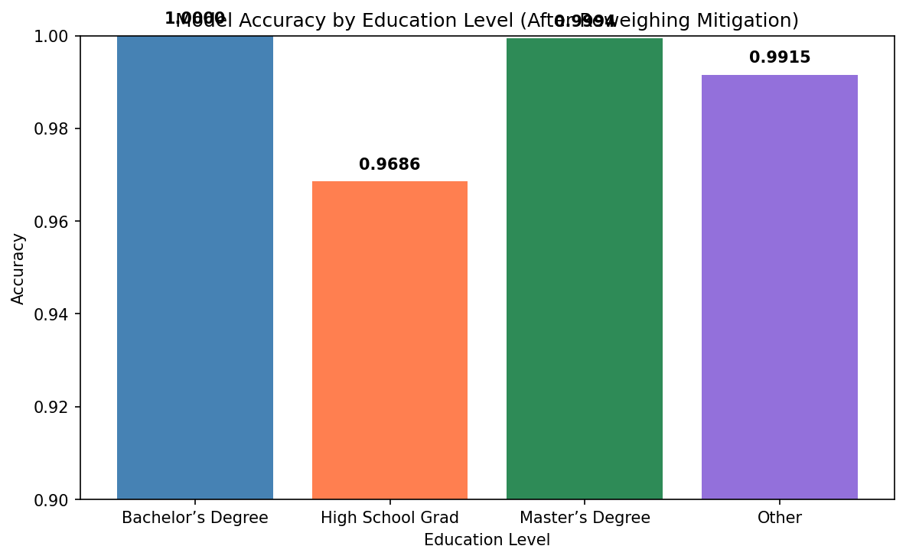
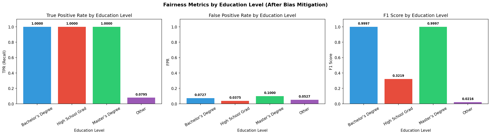
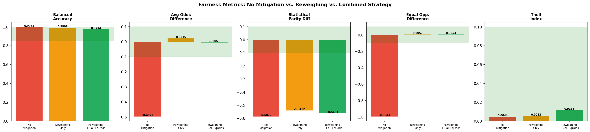
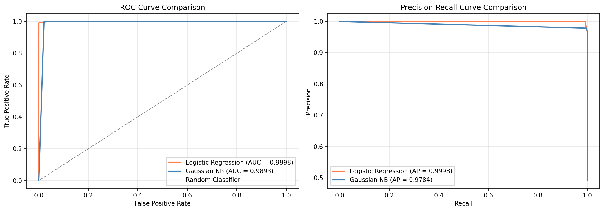
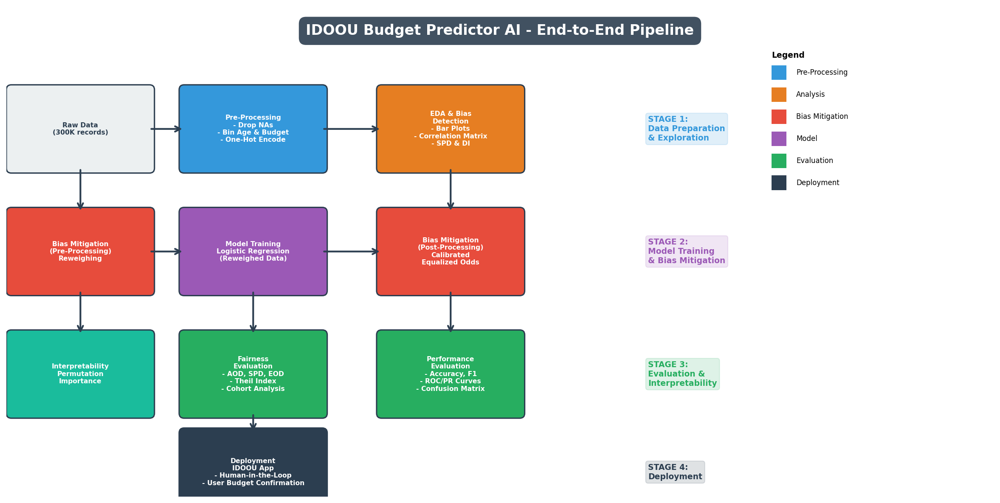

Model Card - IDOOU AI Budget Predictor
Model Details
-- Budget Predictor AI is a Logistic Regression classification model designed to predict whether a user's activity budget will be greater than or equal to $300, or less than $300, within the IDOOU mobile application.
-- The model uses demographic and behavioral features including gender, age group, education level, and recommended activity type to make predictions about user budgets for personalized activity recommendations.
-- The model was developed to support IDOOU's smart concierge functionality, which can be integrated into hotel concierge applications and autonomous vehicle dashboards to recommend local activities to users.
-- A combined bias mitigation strategy was applied using both Reweighing pre-processing and Calibrated Equalized Odds post-processing from the IBM AIF360 toolkit to address fairness concerns related to education-level disparities in budget predictions.
-- The model was evaluated using accuracy, balanced accuracy, confusion matrices, ROC/PR curves, and multiple fairness metrics including statistical parity difference, average odds difference, equal opportunity difference, and Theil index, with cohort analyses stratified by education level.
Intended Use
-- The Budget Predictor is intended to be used within the IDOOU app to estimate a user's budget range so that the app can filter and recommend appropriate activities that align with the user's financial capacity.
-- The model should not be used as a sole determinant of user budgets; IDOOU should prompt users to confirm or adjust the predicted budget to incorporate human-in-the-loop oversight, ensuring users maintain control over the recommendations they receive.
-- Privacy considerations are integrated by allowing users to choose not to provide demographic information; the model gracefully handles missing data, and all user data should be processed in accordance with applicable data protection regulations.
-- Fairness is incorporated through the application of a combined Reweighing and Calibrated Equalized Odds bias mitigation strategy to reduce disparities between education-level groups, and interpretability is provided through permutation importance analysis so users and developers can understand which features drive the model's predictions.
-- The model is not intended for use in credit scoring, employment screening, insurance underwriting, or any high-stakes decision-making context where budget prediction could lead to discriminatory outcomes.
Factors
-- The target variable is Budget (in dollars), binarized into two categories: >= $300 (favorable label, coded as 1) and < $300 (unfavorable label, coded as 0).
-- Age is a continuous variable binned into four categorical groups: 18-24, 25-44, 45-65, and 66-92, then one-hot encoded into four binary features.
-- Gender is a categorical variable with five categories: Female, Male, Non-binary, Other, and Transgender, one-hot encoded into five binary features.
-- Education Level is a categorical variable originally with five categories (Bachelor's Degree, Master's Degree, High School Grad, Did Not Graduate HS, Other); after dropping highly correlated and irrelevant categories, three binary features remain: Bachelor's Degree, High School Grad, and Master's Degree.
-- Recommended Activity is a categorical variable with nine activity types (e.g., Visit a movie theater, Go shopping, Go sightseeing, Hike), one-hot encoded into nine binary features representing the types of activities users engage with.
Metrics
-- Model performance was evaluated using accuracy and balanced accuracy to measure the overall correctness of predictions across both budget classes.
-- Confusion matrices were generated to analyze the distribution of true positives, true negatives, false positives, and false negatives, providing insight into the types of errors the model makes for each class.
-- Fairness was assessed using five metrics from the IBM AIF360 toolkit: statistical parity difference (ideal: 0), disparate impact (ideal: 1), average odds difference (ideal: 0), equal opportunity difference (ideal: 0), and Theil index (ideal: 0).
-- Permutation importance was used as an interpretability mechanism to quantify each feature's contribution to the model's predictions, enabling stakeholders to understand which factors most influence the budget classification.
-- A cohort analysis was performed to evaluate model accuracy stratified by education level, ensuring that no specific education group experiences disproportionately poor model performance.
Training Data
-- The training dataset consists of 78,158 instances, representing 50% of the total pre-processed dataset of 156,317 records, obtained after removing rows with missing values from the original 300,000-participant user experience study.
-- The training data contains 21 one-hot encoded features spanning age, gender, education level, and recommended activity categories, with a binary target variable indicating whether the user's budget is >= $300 or < $300.
-- The class distribution in the training data reflects the underlying dataset imbalance: the majority of users with Bachelor's and Master's degrees have budgets >= $300, while the majority of High School Graduates have budgets < $300, creating a challenge for fair model training.
Evaluation Data
-- The validation dataset consists of 46,895 instances (30% of the total dataset), used for hyperparameter tuning and threshold optimization during model development.
-- The test dataset consists of 31,264 instances (20% of the total dataset), used exclusively for final performance and fairness evaluation to provide an unbiased estimate of model generalization.
-- The train-validation-test split was performed using AIF360's split method with shuffling enabled, ensuring that the protected attribute distributions are approximately maintained across all three partitions.
Quantitative Analysis
-- The Logistic Regression model was evaluated before and after applying a combined bias mitigation strategy consisting of Reweighing (pre-processing) and Calibrated Equalized Odds (post-processing) from the IBM AIF360 toolkit, with the goal of reducing fairness disparities between the privileged group (Bachelor's and Master's degree holders) and the unprivileged group (High School Graduates).
-- Before mitigation, the model achieved a balanced accuracy of approximately 0.9953, but exhibited severe fairness issues: the average odds difference was approximately -0.4968, the statistical parity difference was approximately -0.5860, the equal opportunity difference was approximately -0.9933, and the Theil index was approximately 0.0046.
-- After applying the combined mitigation strategy, the model achieved a balanced accuracy of approximately 0.9734, with significant improvements in three of the four fairness metrics: the average odds difference improved to approximately -0.0051 (within the ideal range of [-0.1, 0.1]), the equal opportunity difference improved to approximately 0.0053 (within the ideal range), and the Theil index was approximately 0.0115 (within the ideal range of [0, 0.1]).
-- The statistical parity difference improved from -0.5860 to approximately -0.5631, which, while still outside the ideal range, represents measurable progress; this persistent disparity reflects the fundamental imbalance in budget distributions across education levels present in the underlying data.
-- The average odds difference and equal opportunity difference showed the most dramatic improvements, moving from heavily biased values to near-ideal levels, indicating that the combined Reweighing plus Calibrated Equalized Odds strategy successfully equalized the model's true positive and false positive rates across the privileged and unprivileged groups.
Results of the AI model after applying the bias mitigation strategy








Ethical Considerations
-- Human-in-the-loop considerations: Users can and should control aspects of the model by confirming or adjusting the predicted budget before receiving activity recommendations. The IDOOU app should present the predicted budget as a suggestion, allowing users to override it, and should display the key factors (such as education level and age group) that influenced the prediction so users can inspect and understand the reasoning behind the model's output.
-- The dataset exhibits selection bias and sample bias in multiple dimensions: younger users (18-24) are overrepresented compared to older age groups, female users are overrepresented compared to other gender categories, and users with Bachelor's and Master's degrees are overrepresented compared to High School Graduates. Additionally, nearly half of the original 300,000 records were dropped due to missing values, which introduces survivorship bias, as users who chose not to provide demographic information are systematically excluded from the model's training data.
-- The ML model, while achieving high accuracy overall, demonstrates a key failure mode: it has difficulty predicting high budgets for High School Graduates, as shown by the highly negative equal opportunity difference before mitigation (-0.9933). To address this, a combined bias mitigation strategy was applied: (1) Reweighing pre-processing adjusts training sample weights to equalize the representation of privileged and unprivileged groups, and (2) Calibrated Equalized Odds post-processing further adjusts predictions to equalize true positive and false positive rates across groups, successfully bringing three of four fairness metrics within their ideal threshold ranges.
-- Potential harms include: (1) systematically underestimating budgets for less-educated users, limiting their access to premium activity recommendations; (2) reinforcing socioeconomic stereotypes by treating education level as a primary predictor of spending capacity; (3) creating a self-fulfilling prophecy where users who receive lower budget predictions are shown cheaper activities and consequently spend less, further biasing future training data.
-- Interpretability analysis revealed that education level features are the most important predictors both before and after bias mitigation, confirming that the model heavily relies on this protected attribute. After applying the combined mitigation strategy, while the relative importance of education features remained high, the model's predictions became more equitable across education groups, as evidenced by the dramatic improvement in equal opportunity difference from -0.9933 to approximately 0.0053.
Caveats and Recommendations
-- The dataset lacks inclusiveness in several respects: approximately 48% of original records were dropped due to missing values in Gender, Education Level, and With Children fields, meaning the model was trained on a subset of users who were willing to provide all demographic information, which may not be representative of the broader user population. Users who decline to share personal information may have systematically different budget patterns.
-- The model shows a predisposition to false negatives for the unprivileged group (High School Graduates), meaning it tends to predict a budget below $300 for these users even when their actual budget exceeds that threshold. Conversely, the model shows low false positive rates overall but may slightly over-predict budgets for users with higher education credentials, which could lead to recommendations that exceed their actual spending capacity.
-- Further ethical AI analyses I would apply beyond this project: Given more time, I would implement intersectional fairness analysis to examine bias across combinations of protected attributes (e.g., education level AND gender AND age), apply adversarial debiasing as an in-processing technique to complement the current pre- and post-processing approaches, conduct user studies with diverse participants to validate that the model's recommendations are perceived as fair and useful, and implement continuous fairness monitoring in production to detect distribution shifts and emerging biases over time.
Business Consequences
-- Positive Impact: The IDOOU Budget Predictor AI has the potential to significantly enhance the user experience by automating the budget estimation process, enabling faster and more relevant activity recommendations. By reducing the friction of manually specifying budgets, users can focus on enjoying their activities, and the personalized approach can increase user engagement and satisfaction. Hotels and autonomous vehicle platforms that integrate IDOOU can offer a differentiated, intelligent concierge service that adds value for their customers and drives adoption of the platform.
-- Negative Impact: Users may lose trust in the IDOOU application if they perceive that the budget predictions are unfair or discriminatory, particularly if users with lower education credentials consistently receive recommendations for cheaper activities while users with higher education credentials are offered premium experiences. This perceived bias could lead to negative reviews, social media backlash, and regulatory scrutiny, resulting in loss of revenue and brand reputation damage.
-- Trust and Transparency: If users discover that their education level is a primary driver of budget predictions, they may feel that the app is making assumptions about their financial capability based on socioeconomic status, which could be seen as offensive and drive user churn across all demographic segments. Proactively disclosing the model's key factors and providing user override capabilities can mitigate this risk and build user confidence in the fairness of the system.